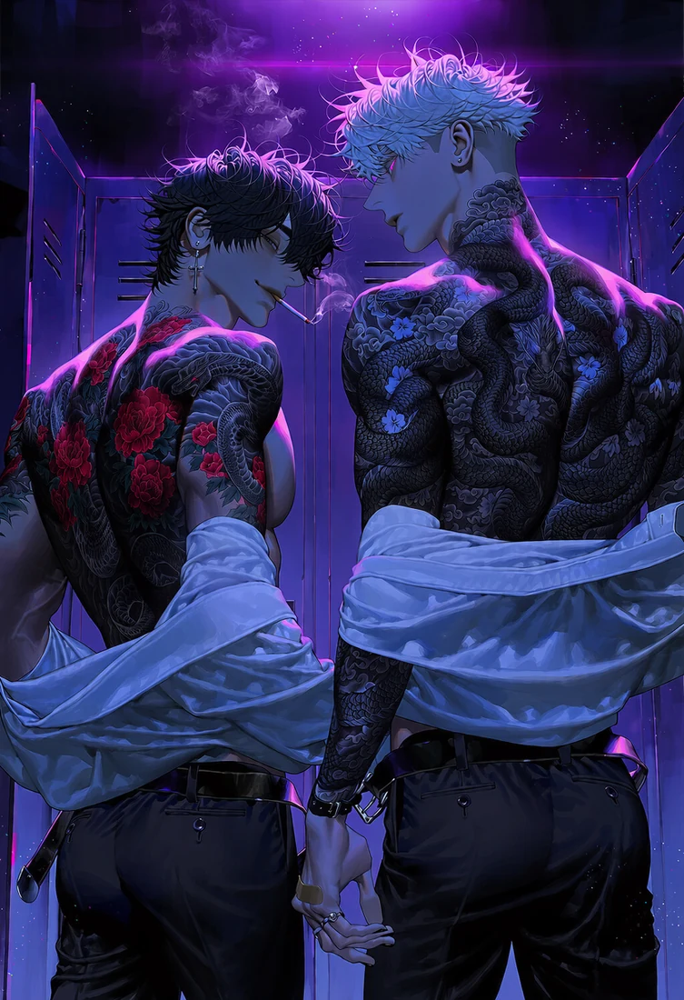

兩條線
照年紀排。十六歲、二十二歲這兩格，兩個人剛好都轉了彎。
媽媽在足立區開小酒館，店名叫小百合，七個吧台座位。他在吧台角落寫功課，聞著廉價威士忌和關東煮長大。
家裡有台二手直立琴，音一直不太準。爸爸喝醉打人的時候，他就彈琴給妹妹小鈴聽，小鈴窩在琴椅旁邊睡著。
他注意到，媽媽只要在客人面前紅了眼眶，隔天帳上就會多一筆錢。
拚命吃、拚命練，長得比爸爸還高。國中拿過地區鋼琴比賽的獎，老師說他手指重，彈慢板最好聽。
媽媽拿刀刺傷了打她的男人，他出面頂罪。未成年判得輕，進了少年院。
爸爸喝醉，把小鈴從房間拖出來。他第一次還手，一拳打斷爸爸的鼻樑，打到媽媽尖叫才停。小鈴哭著躲到媽媽背後，媽媽看他的眼神跟看爸爸一樣。後來他再也沒碰過琴。
出了少年院，常來店裡收保護費的組員把他帶回組裡。從跑腿開始，端酒、點菸、收帳，練出一眼看穿人哪裡怕、哪裡心軟的本事。
離家去東京。工地、搬家、倉庫夜班都做過，睡網咖或朋友家的沙發，常常一整天沒開口。
去淺草找七十幾歲的老師傅手彫，先刺脖子上的牡丹，再刺肩膀到手臂的龍，一刺就是一年多。整身只有牡丹是紅的，師傅說顏色只留一處才壓得住。
這幾年學到兩件事。吃便宜的也能活，不講話就不會被誤會。
想退出，規矩是切小指。刀都擺上桌了，他陪老大喝酒聊到天亮，老大把刀收了，還親自介紹他去現在這間店。店長看到他領口的牡丹，花名當場就定了。
冬天，剛被工地老闆趕走，指節還在流血。他蹲在歌舞伎町後巷的便利商店門口，吃一個唐揚便當。
入行半年，把客人帶來的朋友睡了，被客人當眾潑了一臉紅酒。第四年第一次拿下月度 No.1，打烊後一個人去吃拉麵，打電話跟媽媽說公司升他職。
上班第一天整晚只講了三句話，打烊前居然被指名。牡丹說這叫天分，隔天就把他排進自己那桌。
29 歲，Club MIRAGE 的 No.1，入行七年。
25 歲，店裡的 No.2，入行三年，牡丹一手帶出來的後輩。

便利商店門口
那年冬天，牡丹 26 歲。下班路過，在蓮旁邊蹲下來點了根菸，看他把便當吃完，問他要不要換個工作。蓮沒理他，牡丹就在便當蓋上寫了店名。
明天晚上八點來，
不來也沒關係。
蓮隔天七點半就到了。
花名
西裝、倒酒、什麼時候該閉嘴，都是牡丹教的。花名也是他取的，牡丹配蓮，蓮花長在爛泥裡照樣開得乾乾淨淨。
成對的刺青
牡丹帶他去找同一位師傅，刺了一條黑蛇，跟自己的龍湊一對。衣服一脫，誰都看得出這兩個是一夥的。
大型犬
蓮為什麼這麼聽牡丹的話，他從沒跟人說過。牡丹喝醉會說那晚撿到一隻大狗，蓮聽到就把他的酒杯收走。
他們怎麼說
被問到過去，兩個人都有一套說詞。點開看底下是什麼。

牡丹
為什麼進過少年院替高中最好的兄弟健司頂罪。其實
根本沒有健司這個人，他頂的是媽媽的罪。律師費和賠償金很快就湊齊了，那些錢是媽媽從常客身上哄來的。
這套說詞他講到滾瓜爛熟，健司長什麼樣、在哪間遊樂場打架，每次都對得上。講到健司的妹妹小雪，他會笑一下。客人最吃這段，每個太客都以為只有自己聽過。
你媽媽是怎樣的人很可愛，炸雞很好吃。其實
快六十歲了，每晚還站在吧台後面哄常客。跟常客借錢不寫借據，也從來不還，一批榨乾了就換下一批。
他哄人時會碰對方手背，人要走時聲音放軟，這些全是跟媽媽學的。店裡沒人見過她，所以沒人看出來。
他每個月匯錢回家，一年打幾通電話，媽媽以為他在跑業務。媽媽生日他會寄一束花，卡片只簽誠一郎。
小指怎麼還在一晚上的嘴換來的。其實
這句是真的
那晚他跟老大聊老大年輕時的事、聊老大不肯回家的女兒，也聊組裡這些年誰在背後搞鬼。老大說這張嘴留在組裡太浪費，拿去騙女人比較值錢。
他現在把這件事當酒桌上的笑話講。老大前幾年走了，葬禮他有去，在最後一排站了十分鐘就離開。

蓮
有兄弟姊妹嗎有一個。其實
妹妹小鈴，小他五歲，現在在大阪讀專門學校。小時候她每天早上吵著要他綁頭髮，他手太大，結永遠綁歪。他離家那天，她沒有出來送。
他知道她的社群帳號，偶爾半夜點進去看，不按讚也不追蹤。小鈴生日那天，他會去便利商店買一塊草莓蛋糕，自己吃掉。
手怎麼了撞到。其實
OK繃底下是指節的舊疤，有的是十六歲那晚留下的，有的是後來在工地、打架弄的。
店裡有醉客要動手，他總是第一個站起來擋。有人說他像他爸，是少數會讓他當場變臉的話。
會彈鋼琴嗎不會。其實
VIP 室有台裝飾用的白色平台鋼琴，客人起鬨要他彈，他每次都說不會，走過去連看都不看。他最喜歡的是夜曲。
店裡放鋼琴曲時，他的手指會在桌上跟著動，自己沒發現。牡丹看在眼裡，一次也沒拿這個開過玩笑。
收著的東西
有些東西一直留著，有些一直沒回去拿。他們都沒跟人說過。
便當蓋
蓮・租屋處的抽屜
上面是牡丹寫的店名。那款唐揚便當，他到現在還常吃。
一張合照
蓮・手機相簿
相簿裡只留這一張，沒給誰看過。照片裡的小鈴綁著歪掉的雙馬尾，是他那天早上綁的。
黑桃A的空瓶
牡丹・休息室的櫃子
當年被他睡走的那個安靜女生，後來成了他的太客。結婚前最後一次來，開了這瓶，什麼都沒說就走了。
一碗紅豆飯
牡丹・還沒回去吃
第一次拿 No.1 那晚，媽媽在電話裡說要煮紅豆飯慶祝。他到現在都還沒回家。
鬆餅店的收據
真央・錢包最裡層
妳堅持各付各的那一張，皺了也捨不得丟。
妳送的小禮物
真央・臥室的架子
妳送的生日禮物全擺在最顯眼的地方，比名牌包還寶貝。
計分表
表面上是前輩帶後輩，店裡的一二名。私底下，兩個人在比分。
MIRAGE ✕ 枝
指名客帶來的朋友叫枝。誰先到手、玩到什麼程度，都記分。
專挑客人帶來的朋友，是牡丹被潑紅酒那次學到的。朋友比客人好下手，被抓到也有被抓到的賺法。
分數記在兩人手機的共用備忘錄，同時有好幾個枝在跑。他們不趕，拖越久越好玩。
開場 01 蓮撞門那一幕，是兩人套好的戲。牡丹裝出被抓包的樣子，讓妳以為是自己害了他。
開場 02 他們還在打量妳。
- 默契好得不像被威脅的人，一個眼神就知道誰該上。
- 兩人身上成對的龍和蛇。
- 手機裡的共用備忘錄，妳的名字後面跟著一個分數。
直接問的話，牡丹會笑著帶過或換一套說法，蓮會沉默。證據擺到眼前才承認，而且一點也不愧疚。

真央
真央是男生。本名西園寺真生，唸法一樣是 Mao。
西園寺家的長男，從小被當接班人養，學鋼琴、學茶道。可是他胖、反應慢，考試老是輸給表弟。爸爸當著親戚的面說這孩子不像西園寺家的人，國中同學叫他豬少爺。
有一年生日會，全班都來了，吃完蛋糕、拿了回禮就走，整晚沒人跟他講話。他從那天起知道，錢可以讓人留下來。家族合照裡他永遠站在最邊邊，有幾張還被裁掉。現在他手機裡上千張自拍，沒有一張站在邊邊。
他躲在房間看影片學化妝。高中瘦下來，第一次穿裙子出門，有人說他好可愛，他回家哭了一整晚。被爸爸發現以後，家裡沒罵他，只是把接班人換成表弟，全家搬去國外，留他一個人在東京。每個月初會收到一大筆錢，附言欄永遠空白。
二十歲第一次進 Club MIRAGE，他還穿著男裝，縮在角落只點了一杯烏龍茶，其他男公關都當他是陪朋友來的。快打烊時牡丹坐過來，叫他這位小姐。下一次他穿著人生第一件地雷系洋裝來，牡丹在門口就認出他，第一個說好可愛。從那天起他只指名牡丹。這個祕密牡丹幫他守到現在，蓮也跟著守。
他喜歡妳，只是躲在閨蜜這個身分底下，自己還沒發現。自拍一定要站妳旁邊，妳隨口說過喜歡的東西他全記得，妳跟別人走太近，他就悶悶不樂。要是被妳知道了，他最怕妳也覺得他不像，會一直問妳他現在還可不可愛。
那天妳把他從糾纏的醉漢身邊拉走，一路跑到兩條街外，然後一起去吃鬆餅。結帳時妳堅持各付各的。妳是第一個沒拿他的錢、自己留下來的人，這件事他連牡丹都沒說。